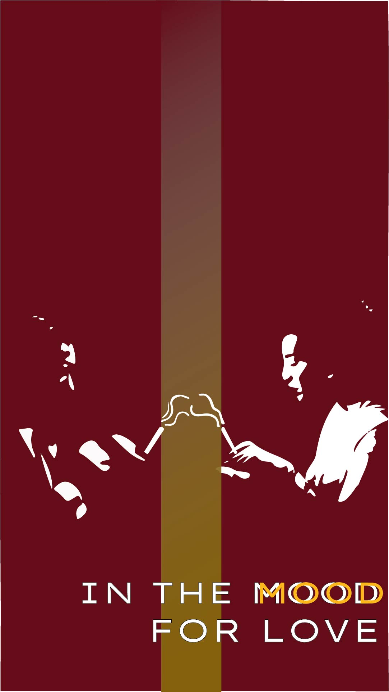
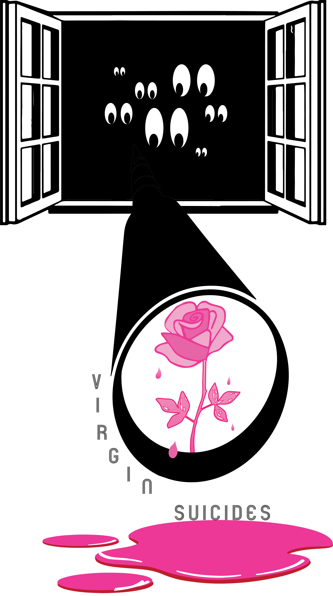
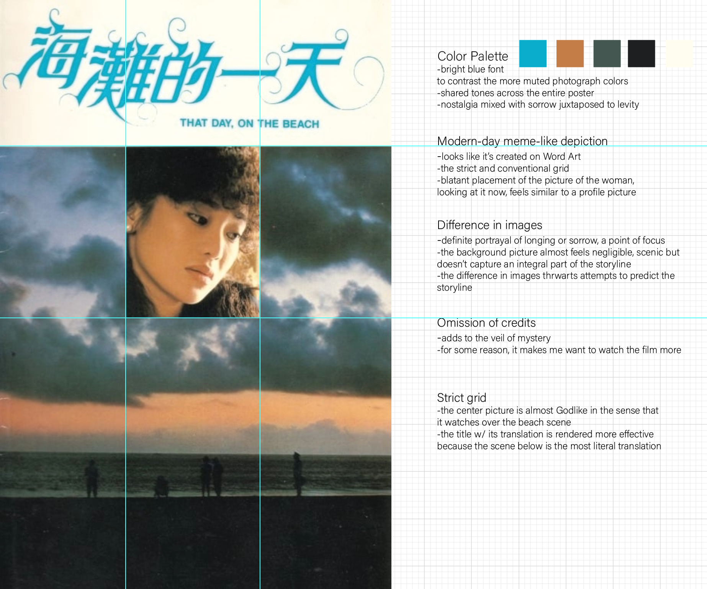
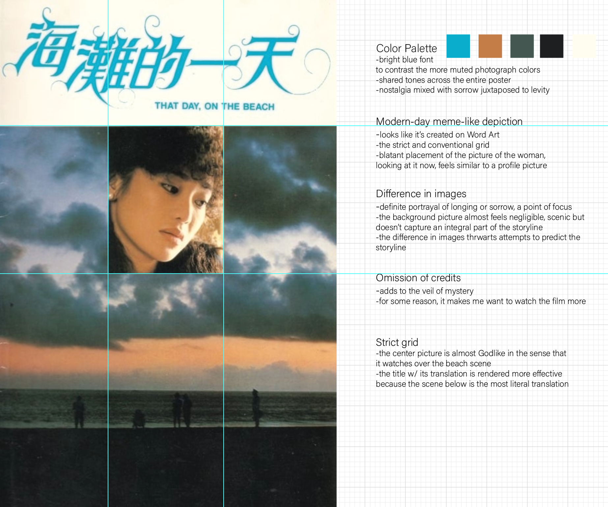

Animated Poster Final
In the Mood for Love_Poster Final from Christina Lan on Vimeo.
From draft to final, I spent more time in Illustrator and Photoshop prepping layers that I wanted to animate in After Effects. I was still unsatisfied with the colors and the look of the wall, so I added a gradient to both. I settled on Adobe Garamound and PT serif for fonts and added the Director, the main actors, and the translated title in Chinese. Even though the wall and the distancing of the characters emphasizes this longing and separation, I manipulated the smoke a bit more to suggest an overlap of desires. Overall, I’m pleased with the poster: my goal was to keep the eye moving from one piece to another across the page, allowing the viewer to take in all the information while still retaining the general theme and emotion of the movie.
First Poster Sketches
 
 
